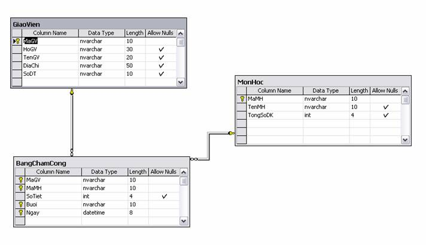
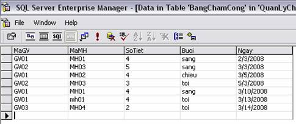
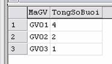
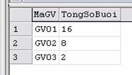
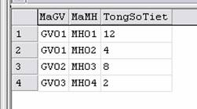

Lab2: các câu lệnh truy vấn đơn giản
-
Tất cả những ví dụ trong các bài lab thực hiện trên cơ sở dữ liệu QuanLyChamCong ở bài lab1

1. nhóm các lệnh lựa chọn
| Select Statement | SELECT columnname FROM tablename |
| Distinct | SELECT DISTINCT columnname FROM tablename |
| Where | SELECT columnname FROM tablename WHERE condition |
| And/Or | SELECT columnname FROM tablename WHERE condition [AND/OR condition] |
| In | SELECT columnname FROM tablename WHERE columnname IN (value1, value2...) |
| Between | SELECT columnname FROM tablename WHERE columnname BETWEEN value1 AND value2 |
| Like | SELECT columnname FROM tablename WHERE columnname LIKE {pattern} |
| Order By | SELECT columnname FROM tablename [WHERE condition] ORDER BY columnname [ASC/DESC] |
| Count | SELECT COUNT(columnname) FROM tablename WHERE condition |
| Group By | SELECT columnname1, function FROM tablename WHERE condition GROUP BY columnname1 |
| Having | SELECT columnname1, function FROM tablename WHERE condition GROUP BY columnname1 HAVING (arithematic function condition) |
1. Truy vấn select .. from .. where đơn giản
Ví dụ 1: Xuất thông tin họ, tên, địa chỉ và số điện thoại tất cả các giáo viên.
select HoGV, TenGV, DiaChi, SoDT
from GiaoVien
Ví dụ 2: Xuất tất cả các thông tin của tất cả các giáo viên.
select MaGV, HoGV, TenGV, DiaChi, SoDT
from GiaoVien
hoặc có thể dùng kí tự * để lấy tất cà các cột.
select *
from GiaoVien
Ví dụ 3: Xuất thông tin những môn học mà tổng số sinh viên đăng kí 80 trở lên.
select MaMH, TenMH
from MonHoc
where TongSoDK >=80
Ví dụ 4: Xuất thông tin MaGV và thông tin những môn học và những buổi học mà họ tham gia giảng dạy
select HoGV, TenGV, MaMH, TenMH, Buoi, Ngay
from GiaoVien, MonHoc, BangChamCong
where GiaoVien.MaGV = BangChamCong.MaGV and BangChamCong.MaMH = MonHoc.MaMH
Vì có sự nhập nhằng không rõ ràng giữa MaGV ở bảng GiaoVien và bảng BangChamCong, do đó phải kết hợp cả tên bảng trước MaGV.
Để ngắn gọn, ta có thể đặt tên rút gọn cho bảng như sau:
select HoGV, TenGV, MaMH, TenMH, Buoi, Ngay
from GiaoVien gv, MonHoc mh, BangChamCong bcc
where gv.MaGV = bcc.MaGV and bcc.MaMH = mh.MaMH
Ví dụ 5: Xuất tất thông tin những môn học mà tổng số sinh viên đăng kí trong khoảng từ 50 đến 100.
select MaMH, TenMH
from MonHoc
where TongSoDK between 50 and 100
2. Lệnh like
like dùng để so khớp một chuỗi theo định dạng, để định dạng, ta dùng các kí tự đại diện %, shift -. % đại diện cho một chuỗi các kí tự, shift - đại diện cho một kí tự.
Ví dụ: xuất MaGV của tất cả các giáo viên có họ Nguyen
select MaGV
from GiaoVien
where HoGV like 'Nguyen%'
Ví dụ: xuất MaGV của các giáo viên trong chuỗi địa chỉ có Da Lat
select MaGV
from GiaoVien
where DiaChi like '%Da Lat%'
Ví dụ: xuất MaGV của các giáo viên mà tên của họ bắt đầu bằng T và chỉ có 3 kí tự
select MaGV
from GiaoVien
where tenGV like 'T__'
3. Lệnh order by
order by: để sắp xếp dữ liệu, ASC: tăng, DESC: giảm. Nếu không có từ khóa ASC hay DESC thì mặc định là ASC.
Ví dụ: xuất thông tin giáo viên và sắp xếp tăng theo tên
select HoGV, TenGV, DiaChi, SoDT
from GiaoVien
order by TenGV --hoặc TenGV ASC
Ví dụ: xuất thông tin mon học và sắp xếp giảm theo TongSoDK
select MaMH, TenMH
from MonHoc
order by TongSoDK DESC
Chú ý: nếu cần sắp xếp theo nhiều trường dữ liệu thì kết hợp từ khóa cho từng trường, và độ ưu tiên là từ trái qua.
Ví dụ: sắp xếp giáo viên giảm theo tên, nếu tên trùng nhau thì sắp tăng theo họ.
select HoGV, TenGV, DiaChi, SoDT
from GiaoVien
order by TenGV DESC, HoGV ASC
4. Các lệnh khác
Dùng distinct khi muốn loại bỏ các bộ trùng nhau.
Ta có thể dùng top n để chỉ định số bộ cần lấy là n
Ví dụ:
select top 3 TongSoDK
from MonHoc
order by TongSoDK Desc
Ví dụ:
select distinct(TenGV)
from GiaoVien
Các ví dụ về lệnh Group by, Group by ... Having sẽ ở phần sau cùng với nhóm lệnh thực hiện tính toán.
2. nhóm các lệnh thực hiện tính toán
| Các hàm tính toán trên nhóm bảng ghi | Các hàm sử lý chuỗi | Các phép toán xử lý ngày tháng thời gian |
| MAX(expression): tìm max | LEN(s): tính chiều chuỗi s | DATE(): lấy ngày tháng hiện hành |
| MIN(expression): tìm min | LEFT(s, n): lấy từ trái chuỗi s, n kí tự | DAY(dd): lấy ngày của chuỗi dd |
| AVG(expression): tính trung bình | RIGHT(s, sokt): lấy từ phải chuỗi s, n kí tự | MONTH(dd): lấy tháng của chuỗi dd |
| ABS(x): tính trị tuyệt đối | "%", "--": kí tự thay thế | YEAR(dd): lấy năm của chuỗi dd |
| SQRT(x): bình phương | ||
| LOG(x): log | ||
| SIGN(x): làm tròn | ||
| EXP(x): hàm mũ | ||
| count(): hàm đếm | ||
| Sum(): tính tổng | ||
| ROUND(x, n): làm tròn |
Ví dụ 1: Xuất số tổng số đăng kí môn học lớn nhất
select max (TongSoDK)
from MonHoc
Ví dụ 2: Xuất tất số sinh viên trung bình đăng kí môn học
select AVG (TongSoDK)
from MonHoc
Ví dụ 3: Hãy đếm xem có tổng số bao nhiêu giáo viên
select count(*)
from GiaoVien
Ví dụ 4: tính tổng số đăng kí môn học
select sum(TongSoDK)
from MonHoc
Ví dụ 5: xuất thông tin bảng chấm công tháng 3 năm 2008
select *
from BangChamCong
where month(Ngay) = 3 and year(Ngay) = 2008
Lệnh gom nhóm group by, gom nhóm kèm điều kiện Group by ... Having.
Chú ý: chỉ được select những trường có trong mệnh đề gom nhóm Group by.
Ví dụ 5: Xuất MaGV và tổng số buổi giáo viên đó được chấm công
select MaGV, count(MaGV) as TongSoBuoi
from BangChamCong
group by MaGV
Với bảng dữ liệu như sau:

Kết quả:

Ví dụ 6: Xuất MaGV và tổng số tiết của các buổi mà giáo viên đó được chấm công
select MaGV, sum(SoTiet) as TongSoTiet
from BangChamCong
group by MaGV
Kết quả:

Ví dụ 7: Xuất MaGV, MaMH và tổng số tiết của tưng môn mà giáo viên đó được chấm công
select MaGV, MaMH, sum(SoTiet) as TongSoTiet
from BangChamCong
group by MaGV, MaMH
Kết quả:

Ví dụ 8: Xuất MaGV và tổng số tiết của các buổi mà giáo viên đó được chấm công lớn hơn 10 tiết
select MaGV, sum(SoTiet) as TongSoTiet
from BangChamCong
group by MaGV
Having sum(SoTiet) > 10
Ví dụ 9: xuất thông tin họ tên giáo viên và tổng số tiết giáo viên đã được chấm công giảng dạy có sắp xếp theo thứ tự giảm dần theo tổng số tiết
select HoGV, TenGV, sum(SoTiet) as TongSotiet
from GiaoVien gv, BangChamCong bcc
where gv.MaGV = bcc.MaGV
group by gv.MaGV, HoGV, TenGV
order by sum(SoTiet)
3. Nhóm lệnh cập nhật dữ liệu
1. Lệnh Insert Into.
Cú pháp câu lệnh:
INSERT INTO tablename
(
attribute1name,
attribute2name,
attribute3name,
...,
)
values
(
value1,
value2,
value3,
...,
);
Ví dụ 1: thêm giáo viên vào bảng giáo viên
Insert into GiaoVien (MaGV, HoGV, TenGV, DiaChi, SoDT)
Values
('GV04', 'Nguyen Van', 'An', '7 Hoang Hoa Tham', '063822344');
Ví dụ 2: thêm một bộ dữ liệu vào bảng chấm công
Insert into BangChamCong (MaGV, MaMH, SoTiet, Buoi, Ngay)
Values
('GV04', 'MH01', 4, 'sang', '12/3/2008');
2. Lệnh Update.
Cú pháp lệnh:
UPDATE tablename SET attribute1name=value1 WHERE attribute2name=Value2
Ví dụ: Cập nhật lại dữ liệu cho giáo viên có mã là GV04, đổi tên của giáo viên này là Quan.
Update GiaoVien
Set TenGV = 'Quan'
Where MaGV = 'GV04'
2. Lệnh Delete.
Cú pháp lệnh:
DELETE FROM tablename WHERE attributename=Value
Ví dụ: Xoá giáo viên trong bảng GiaoVien có MaGV là GV04 ra khỏi cơ sở dữ liệu
Delete From GiaoVien
Where MaGV = 'GV04'
4. bài tập
1. Thực hiện các câu truy vấn trên cơ sở dữ liệu DeAn
-
Tìm họ tên của tất cả các nhân viên.
-
Xuất thông tin tất cả các nhân viên mà tên của họ bắt đầu bằng chữ T và ở TP HCM
-
Xuất thông tin tất cả các nhân viên Nam của phòng số 5.
-
Tìm họ tên và địa chỉ của tất cả các nhân viên thuộc phòng số 5.
-
Tìm tất cả các nhân viên dưới sự quản lý của người có mã là 333445555.
-
Sắp xếp (tăng/giảm) theo tên, nếu tên trùng nhau thì theo ngày sinh.
-
Hiển thị thông tin nhân viên theo từng phòng.
-
Tìm số nhân viên của từng phòng và sắp xếp theo thứ tự tăng.
-
In thông tin họ tên, địa chỉ ,mức lương trưởng phòng của tất cả các phòng.
-
Tìm các đề án mà tên có chứa chuỗi "San pham".
-
Tìm thông tin các đề án của phòng số 5 và có địa điểm là TP HCM.
-
Tìm tên và địa chỉ của tất cả các nhân viên của phòng nghiên cứu.
-
Cho biết tổng số đề án trong công ty.
-
Tìm tất cả các nhân viên sinh sau năm 1955.
-
Tìm các nhân viên sinh trong tháng 8 đến tháng 12.
-
Tìm nhân viên địa chỉ ở quận 1, TP HCM.
-
Tìm nhân viên của phòng 'Nghien Cuu' mà địa chỉ không phải tại thành phố HCM.
-
Tìm phòng có mức lương trung bình > 40000.
-
Tìm mức lương cao nhất trong công ty.
-
Tìm tất cả các nhân viên tham gia đề án "Tin Hoc Hoa" có thời gian làm việc >30 giờ/tuần.
-
Xuất thông tin nhân viên theo từng đề án mà họ tham gia.
2. Thực hiện các câu truy vấn trên cơ sở dữ liệu NganHang
-
Tìm tên tất cả các ngân hàng có chi nhánh ngân hàng ở thanh phố “Da Lat”.
-
Tìm tất cả những thành phố mà có chi nhánh của ngân hàng công thương.
-
Tìm thông tin về tất cả các chi nhánh của ngân hàng công thương có địa điểm ở TP HCM.
-
Xuất thông tin từng ngân hàng và chi nhánh của nó.
-
Tìm khách hàng mà địa chỉ của họ ở 'Ha Noi'.
-
Tìm các khách hàng có tên Son.
-
Tìm các khách hàng mà địa chỉ của họ ở đường "Tran Hung Dao".
-
Tìm các khách hàng có tên "Thao".
-
Tìm khách hàng có mã số bắt đầu là '11' và ở TP HCM.
-
Xuất thông tin về tên ngân hàng, thành phố chi nhánh và tài sản theo thứ tự tăng của tài sản của chi nhánh, nếu tài sản trùng nhau thì sắp tăng theo thành phố chi nhánh.
-
Tìm thông tin tất cả những thông tin về ngân hàng và chi nhánh ngân hàng mà tài sản 3000000000 < tài sản < 5000000000.
-
Cho biết tài sản trung bình chi nhánh của từng ngân hàng.
-
Tim thông tin của khách hàng có tài khoản vay tại ngân hàng công thương và có tên là 'Thao'.
-
Xuất thông tin về tên ngân hàng và tổng tài sản của các ngân hàng.
-
Tìm MaCN và TaiSan của chi nhánh có tài sản lớn nhất.
-
Liệt kê tất cả những những khách hành có tài khoản gởi tại chi nhánh ngân hàng “A Chau”.
-
Tìm tất cả các số tài khoản vay thực hiện tại chi nhánh của ngân hàng ngoại thương mà số tiền vay > 1200000.
-
Tính tổng số tiền mà mỗi chi nhánh ngân hàng đang được khách hàng gởi.
-
Xuất thông tin về tài khoản vay và tài khoản gởi hiện có của tất cả các khách hàng có tên là 'Son'.
-
Tìm thông tin về khách hàng có tổng số tiền vay tại tất cả các ngân hàng > 30000000.
3. Thực hiện các câu truy vấn trên cơ sở dữ liệu QuanLyHocVien
-
In thông tin học viên có kết quả học tập xếp loại yếu.
-
Xuất thông tin học viên theo thứ tự giảm của điểm.
-
Xuất thông tin các khóa học có ngày bắt đầu trong tháng 5 năm 1997.
-
Tìm thông tin về các khóa học chuyên tu.
-
Hiển thị thông tin cá nhân và thông tin về lớp học, điểm của các học viên họ Nguyễn và có tên là Mai.
-
Xuất thông tin tên lớp học và tên lớp trưởng của lớp học đó.
-
Xuất thông tin về tất cả các học viên đạt loại khá và giỏi của lớp do giáo viên Tran Thanh phụ trách.
-
Xuất thông tin tất cả các học viên được miễn học phí và có kết quả học tập trung bình trở lên.
-
Cho biết kết quả cuối khoá của các học viên do giáo viên "Tran Thanh" hoặc giáo viên "Ho Nhan" dạy trong khoá có mã số "PT197".
-
Cho biết danh sách lớp học và số lượng học viên thực sự của lớp đó.
-
Cho biết số điểm cao nhất mà học viên đạt được của từng lớp học
-
In thông tin về số lượng học viên thực sự của từng lớp học theo thứ tự tăng của số lượng
-
Cho biết tên lớp học, tên giáo viên phụ trách, sĩ số dự kiến và phòng học của lớp học bắt đầu từ ngày 17/4/2000.
-
Cho biết tên các lớp học và điểm trung bình của tất cả các học viên trong lớp.
-
Cho biết họ tên, địa chỉ của các học viên là giáo viên đồng thời làm lớp trưởng.
-
Cho biết họ tên giáo viên và số lượng lớp mà giáo viên đó đã dạy.
-
Cho biết họ tên, kết quả học tập của những học viên được miễn học phí.
-
Cho biết tên học viên, tên lớp mà học viên đó học và số biên lai tương ứng, với điều kiện các lớp này là của các khoá học kết thúc trước ngày 30/5/2000.
4. Thực hiện các thao tác cập nhật dữ liệu trên cơ sở dữ liệu DeAn, NganHang, QuanLyHocVien
-
Thêm dòng <'Tran', 'Minh', 'Tuan', '943775543', '21/06/1942','23 Tran Binh Trong, Q5, TP HCM', 'Nam', 58000, '888665555',1> vào bảng NhanVien
-
Thêm dòng <'Sam Pham A', 4, 'Vung Tau',2> vào bảng DeAn
-
Thêm dòng <'677678989', null, '40.0'> vào bảng PhanCong
-
Thêm dòng <'453453453', 'Tien', 'Nam', '12/12/1960','Vo Chong'> vào ThanNhan.
-
Xoá các bộ thoả mãn MaNV = '333445555' trong bảng PhanCong.
-
xoá trong các bộ thoả MaNV = '987654321' trong bảng NhanVien
-
Xoá đề án có tên 'San Pham X' trong bảng DeAn
-
Tăng thời gian tham gia đề án của các nhân viên nam lên thêm 4 giờ/tuần.
-
Xoá tất cả các nhân viên có mức lương < 30000.
-
Thực hiện các thao tác thêm, xóa, sửa trên các bảng của cơ sở dữ liệu NganHang.
-
Tìm tất cả các khách hàng có tài khoản gởi tại ngân hàng ngoại thương với số tiền gởi lớn hơn 15000000 và cộng thêm vào số tiền gởi hiện có của họ 1000000
-
Thực hiện các thao tác thêm, xóa sửa trên các bảng của cơ sở dữ liệu QuanLyHocVien.
-
Tìm tất cả các học viên là học sinh và cập nhật học phí bằng 1/2 học phí.